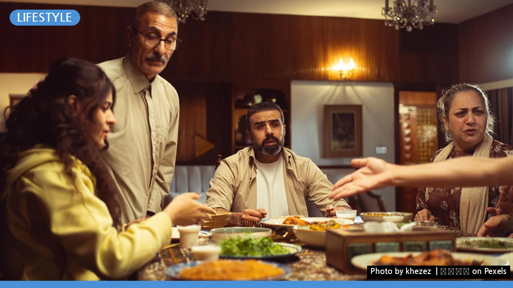
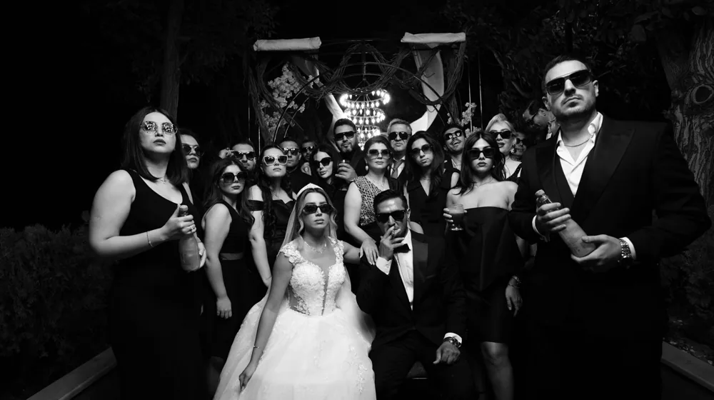

이예림, 이름 석 자에 숨겨진 비밀! 검색어 1위 미스터리 파헤치기
사진: khezez | خزاز / Pexels (무료 이미지, 출처 표기)
"이예림" 대체 왜 난리일까? 평범함 뒤 숨겨진 놀라운 반전!

혹시 오늘 인터넷 검색창에서 '이예림'이라는 이름, 보셨나요? 평범한 듯 보이지만, 이 이름 석 자가 지금 대한민국을 뜨겁게 달구고 있습니다. 대체 이 평범한 이름 뒤에 어떤 이야기가 숨어 있기에, 수많은 이들의 호기심을 자극하며 실시간 검색어 1위에 오르게 된 걸까요? 단순히 유명인의 딸? 그것만으로는 설명할 수 없는, 그녀만의 특별한 매력과 파란만장한 스토리가 숨어 있습니다. 지금부터 그 미스터리를 함께 파헤쳐 보겠습니다!
이름 석 자에 담긴 무게: 그녀가 대중의 관심을 받는 진짜 이유
어느 날 갑자기, 특정 인물의 이름이 검색어 순위에 오르는 현상은 우리에게 익숙합니다. 하지만 ‘이예림’이라는 이름이 급부상한 데에는 여러 겹의 스토리가 얽혀 있습니다. 단순히 ‘누구의 딸’이라는 후광 효과를 넘어, 그녀 스스로가 걸어온 길, 그리고 최근의 행보들이 복합적으로 작용하고 있습니다. 특히, 최근 방송 출연이나 개인적인 소식들이 연이어 보도되면서, 대중들은 그녀의 삶에 더욱 깊은 관심을 가지게 되었습니다. 과거의 이미지에서 벗어나 끊임없이 도전하고 변화하는 모습이 많은 이들에게 공감과 궁금증을 동시에 안겨준 것이죠. 이는 마치 오랫동안 보지 못했던 친구의 근황을 듣는 듯한 반가움과 동시에, ‘그동안 무슨 일이 있었을까?’ 하는 호기심을 자극하는 것과 같습니다.
개그맨 이경규의 딸, 그 이상을 보여주다
이예림 씨를 이야기할 때 빼놓을 수 없는 이름이 바로 '개그계의 대부' 이경규 씨입니다. 어린 시절부터 예능 프로그램을 통해 아버지와 함께 대중에게 얼굴을 알렸던 그녀. 많은 이들은 그녀를 ‘이경규 딸’로 기억하지만, 이예림 씨는 그 타이틀에만 머무르지 않았습니다. 오히려 그 그림자에서 벗어나 자신만의 색깔을 찾기 위해 부단히 노력했습니다. 그녀는 아버지의 후광에 기대기보다, 자신만의 길을 개척하며 배우로서의 꿈을 키워나갔습니다. 이것은 단순한 상속이 아닌, 스스로의 재능과 열정으로 일궈낸 성과라는 점에서 더욱 큰 박수를 받습니다. ‘아빠 찬스’라는 편견을 깨고 당당히 자신의 영역을 구축해 나가는 모습은 많은 젊은이들에게 귀감이 되고 있습니다.
배우 이예림의 변신: 연기 스펙트럼 넓히기
이예림 씨는 배우로서 차근차근 필모그래피를 쌓아가며 대중에게 자신의 존재감을 각인시켰습니다.
초반에는 아버지와 함께 출연한 예능에서 친근한 이미지로 다가왔지만, 이후 여러 드라마와 웹드라마에 출연하며 연기자로서의 가능성을 보여주었습니다. 특히, 역할에 대한 진지한 고민과 노력을 통해 다양한 캐릭터를 소화하며 연기 스펙트럼을 넓혀왔습니다. 처음에는 단역으로 시작했지만, 꾸준히 경험을 쌓으며 이제는 주연급 배우로 성장한 그녀의 모습에서 우리는 끊임없이 노력하는 한 사람의 열정을 엿볼 수 있습니다.
주요 출연작 및 활동
축구선수 김영찬과의 만남, 세간의 이목을 집중시키다
이예림 씨의 인생에서 또 하나의 중요한 전환점은 바로 축구선수 김영찬 씨와의 만남, 그리고 결혼입니다. 유명 개그맨의 딸과 프로 축구선수의 만남은 스포츠 팬들과 연예계 팬들 모두에게 큰 관심을 불러일으켰습니다. 이들의 연애와 결혼 과정은 마치 한 편의 로맨틱 코미디처럼 대중에게 즐거움을 선사했으며, 특히 결혼 준비 과정이나 신혼 생활이 방송을 통해 일부 공개되면서 큰 화제를 모았습니다. 평범한 듯 특별한 이들의 이야기는 많은 이들에게 대리 만족과 함께 '나도 저런 사랑을 꿈꾼다'는 로망을 심어주었죠. 단순한 결혼 소식이 아닌, 두 사람의 진솔한 사랑 이야기가 대중의 마음을 움직인 것입니다.
이예림, 단순한 셀럽을 넘어 하나의 현상으로
결국 ‘이예림’이라는 이름이 검색어 1위에 오른 것은 단순한 우연이 아닙니다. 유명인의 자녀라는 배경을 딛고 스스로의 재능으로 당당히 연기자의 길을 걷고, 한 남자의 아내이자 한 가정의 일원으로서 솔직하고 꾸밈없는 모습을 보여주기까지, 그녀의 삶은 마치 한 편의 성장 드라마와 같습니다. 대중은 그녀에게서 평범한 듯하지만, 결코 평범하지 않은 용기와 노력을 발견합니다. 이예림 씨가 지금 우리 사회에 던지는 메시지는 명확합니다. ‘스스로의 삶을 개척하고, 진정성 있는 모습으로 소통할 때, 대중은 기꺼이 당신의 이야기에 귀 기울일 것이다’라는 것 말이죠. 오늘의 검색어 1위는 그녀의 존재감과 영향력이 얼마나 커졌는지를 보여주는 확실한 증거가 아닐까요? 앞으로 그녀가 또 어떤 놀라운 모습으로 우리를 놀라게 할지, 계속해서 지켜보는 것이 흥미로울 것 같습니다.
🔗 이 글도 함께 보면 좋아요: 헌법, 대체 왜 난리일까? 실시간 검색어 1위의 놀라운 비밀!